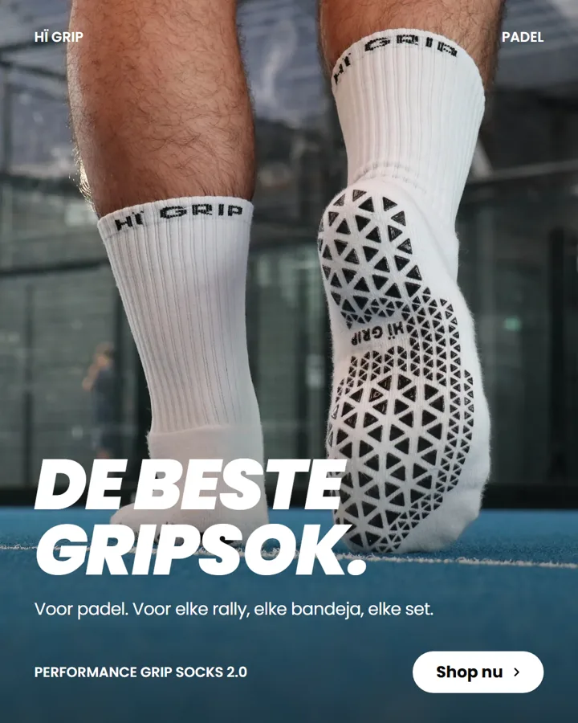
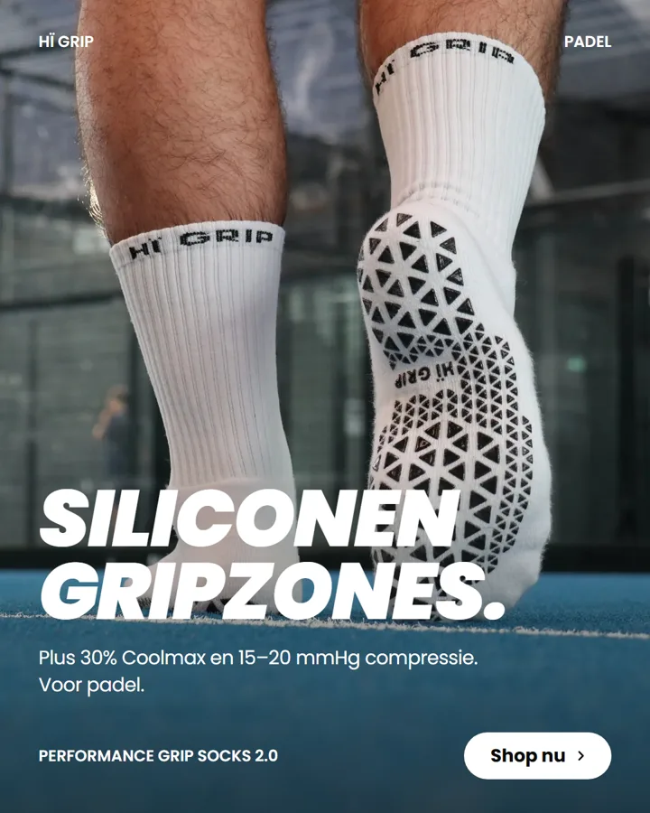
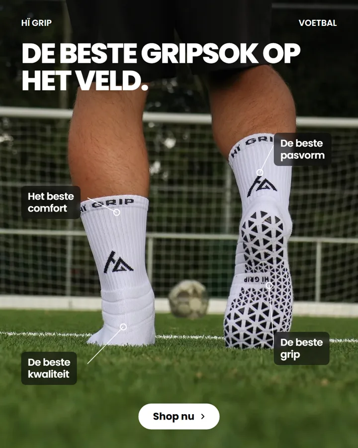
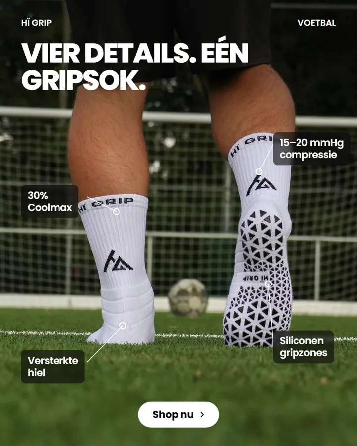
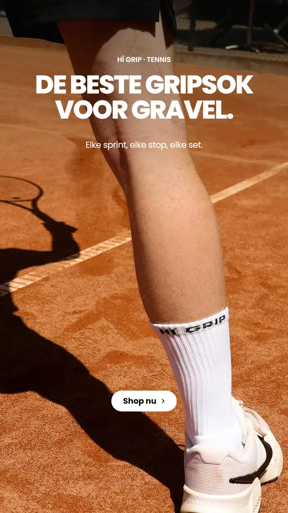
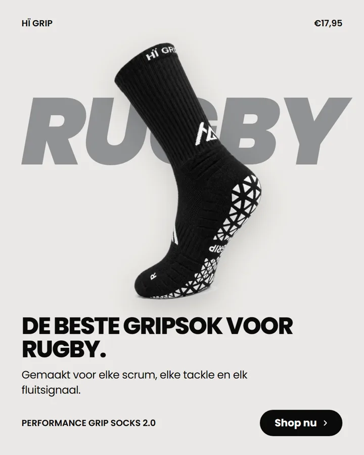
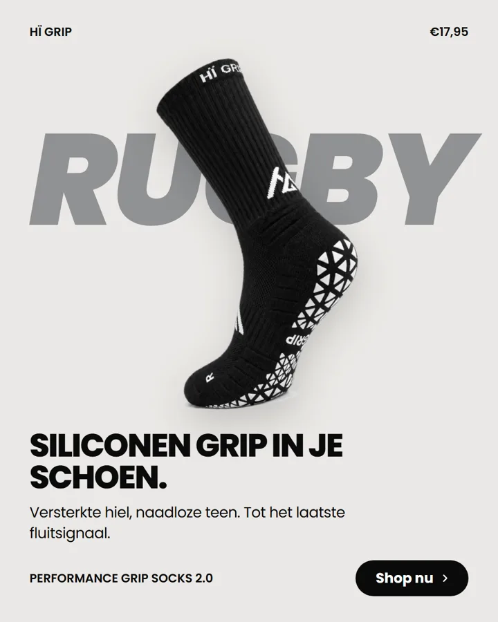

Hypothese: een Instagram-ad die de technische features van de sok concreet benoemt (B) haalt minstens 50% hogere CTR dan een ad die zegt "de beste gripsok" (A).
Per paar zijn beeld, opmaak, tekstlengte, CTA en sport gelijk. Alleen de boodschap verschilt. De features in B komen uit de productwaarheid 2.0 (siliconen gripzones, 30% Coolmax, 15–20 mmHg compressie, versterkte hiel, naadloze teen). In B staat bewust géén "95% meer grip": dan test je een getal en niet de features.
Waarom: het verschil zit in één kop, dus de test meet echt de boodschap. De foto toont de gripzool, waardoor B klopt met wat je ziet. Padel is de grootste beachhead (40.000–60.000 actieve spelers per maand) en nog vrijwel leeg aan merk-ads in NL. Feed 4:5 is de plaatsing waar link clicks het goedkoopst zijn. Tweede keus: paar 2, dat het verschil het zichtbaarst maakt, maar daar oogt A met vier keer "de beste" bijna als een stropop.
Groot, schuin Poppins Black over een eigen foto, kleine labels in de hoeken: de stijl van je visuele inspo (Creative Brief, Guideline).

Primaire tekstDe beste gripsok voor padel. Je voet blijft stil in je schoen, van warming-up tot laatste punt. Performance Grip Socks 2.0 · €17,95

Primaire tekstSiliconen gripzones en 30% Coolmax. Je voet blijft stil in je schoen, van warming-up tot laatste punt. Performance Grip Socks 2.0 · €17,95
Vier lijntjes naar de sok, het "feature callout"-format dat in productcategorieën met specs het langst blijft draaien. A en B hebben dezelfde vier posities en bijna dezelfde lengte.

Primaire tekstDe beste gripsok op het veld. Je voet blijft stil in je schoen, van warming-up tot laatste minuut. Performance Grip Socks 2.0 · €17,95

Primaire tekstSiliconen gripzones en versterkte hiel. Je voet blijft stil in je schoen, van warming-up tot laatste minuut. Performance Grip Socks 2.0 · €17,95
Eén foto, een korte kop bovenaan in het midden en een losse knop: het patroon uit de Story-ads die @72atta deelt (Sweaty Betty, Byoma). Tekst valt binnen de veilige zone van Stories.

Primaire tekstDe beste gripsok voor gravel. Je voet blijft stil in je schoen, van warming-up tot matchpoint. Performance Grip Socks 2.0 · €17,95
Primaire tekstSiliconen grip en versterkte hiel. Je voet blijft stil in je schoen, van warming-up tot matchpoint. Performance Grip Socks 2.0 · €17,95
De sok staat vóór een groot woord, zoals in de NATURE-inspo. Het woord RUGBY is in beide gelijk; de boodschap staat eronder. Voor rugby is geen sterke eigen actiefoto, dus hier staat het product centraal.

Primaire tekstDe beste gripsok voor rugby. Je voet blijft stil in je schoen, van warming-up tot fluitsignaal. Performance Grip Socks 2.0 · €17,95

Primaire tekstSiliconen grip en een naadloze teen. Je voet blijft stil in je schoen, van warming-up tot fluitsignaal. Performance Grip Socks 2.0 · €17,95
Bronnen: eigen foto's (higrip.nl, shoot Concordia/sportfoto's); visuele inspo uit Google Drive (Advertentie inspo); TikTok @dan.jordn (2 video's, transcript), @72atta (Story-ad-voorbeelden); @dantebrunelli_2 kon niet worden geladen zonder TikTok-login. Benchmarks: Emplifi Q2 2026, GetHookd, Brandsearch 2026, Inderscience (algemeen vs specifiek). Eerder ads-onderzoek in de vault: FitSockr-hooks in de Meta Ad Library.